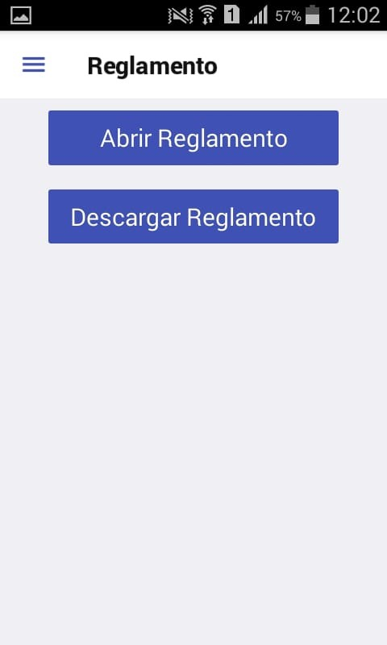
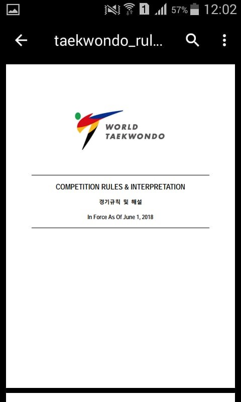

En esta pantalla podemos visualizar el reglamento. Si lo queremos ver pero todavía no lo hemos descargado, podemos hacerlo presionando el botón Descargar. Una vez hecho esto, podremos visualizarlo en cualquier momento que queramos presionando en Abrir Reglamento, incluso si no tenemos conexión a internet.
Una vez abierto el reglamento, veremos algo similar a esto:
